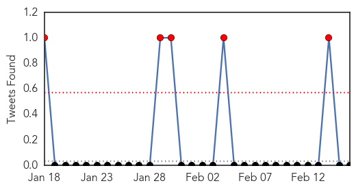
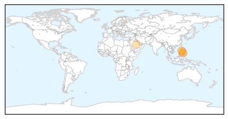
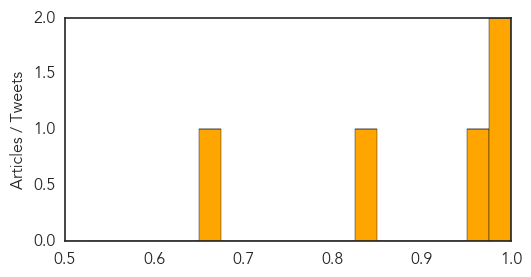

Bubonic Plague
30-Day Web Trend
30 alerts, 0 warnings
30-Day Twitter Trend
0 alerts, 0 warnings

Article Locations

Article Confidences

Top Articles:
-
No articles found for Feb 16, 2015
Top Tweets:
-
No tweets found for Feb 16, 2015
MERS
30-Day Web Trend
12 alerts, 0 warnings
30-Day Twitter Trend
8 alerts, 0 warnings

Article Locations
Article Confidences
Top Articles:
Top Tweets:
- 0.677
- AFD Blog `Saudi MOH Announces 5 More MERS Cases' MERS-CoV http://t.co/0gUpcZjuVW